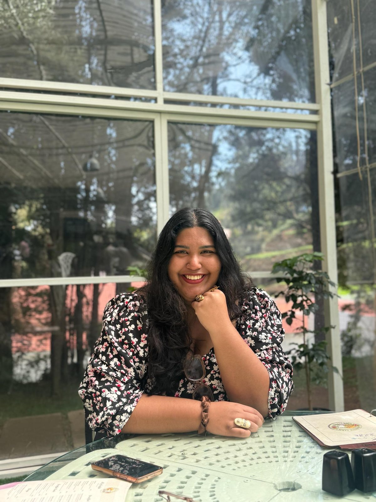

Curious about the systems behind the solutions.
How I got here

My interest in how systems reach people started in the Nilgiris in 2018. During a development internship I spent two months in a tribal hamlet, helping households collect the documents they needed to apply for a state health insurance scheme, and staying in the hostel for students who had dropped out of school. The scheme existed. Reaching it meant having the right papers, and many households needed someone alongside them to get there.
I studied economics at BCM College for Women, where I was president of the Economics Association, and then rural management at IRMA. In 2019, a classmate and I won first prize at EIMA Agrimach India for Impactful Innovations for Indian Agriculture, organised by FICCI with the Ministry of Agriculture and Farmers Welfare and ICAR. In 2020 I was selected for the Singapore International Foundation’s Young Social Entrepreneurs programme.
Two early roles shaped how I think about gender and business. At Cummins I analysed gender data across five states for a policy advocacy proposal under Cummins Powers Women, and developed indicators to judge whether gender equity initiatives were working. At NTPC I worked as a CSR executive in Unchahar, Uttar Pradesh, close to how a large company decides where its community money goes.
I joined Accion in 2021 as an impact analyst and am now a senior associate. My work has moved across financial inclusion, gender, agriculture and enterprise development, through field research, advisory sprints and the tools that sit behind them. I lead the gender technical assistance workstream under the ClimaFii Alliance, and I also work on research and product design for women’s digital financial inclusion in India, sex-disaggregated data for financial institutions, and parametric insurance field research.
A recent field visit in Kerala was the first in years where I could work for a whole day in my mother tongue.
Questions that shape my work
- How do we make climate risk solutions relevant to the people most exposed to climate shocks?
- How can financial institutions use better data to design products that serve women, and what has to change for that data to reach the people making decisions?
- What changes when the average woman at the margins is the starting point of a product, and the exceptional woman no longer sets the design case?
- How do enterprises build commercially sustainable models that serve underserved customers?
- How can gender considerations inform business decisions, and sit inside the commercial work of an enterprise instead of beside it?
Education and path
- 2021 to nowAccionImpact analyst, senior analyst, associate, senior associate
- 2020 to 2021NTPC LimitedCSR executive, Unchahar, Uttar Pradesh
- 2018 to 2020Institute of Rural Management AnandPost Graduate Diploma in Rural Management
- 2015 to 2018BCM College for WomenBA Economics
Recognition and learning
- 2025Gender and Livelihoods: A Gender Transformative ApproachAzim Premji University
- 2020Young Social Entrepreneurs programmeSelected by the Singapore International Foundation
- 2019EIMA Agrimach India, first prizeImpactful Innovations for Indian Agriculture, organised by FICCI with the Ministry of Agriculture and Farmers Welfare and ICAR
See the work
Four case studies show what I did, where I led and where I contributed to a team.
Selected work ↗